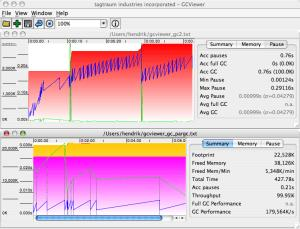

九款Java性能调试工具，有什么更好、更多的工具，欢迎补充。
NetBeans中可以找到NetBeans Profiler。
NetBeans分析器是NetBeans的扩展，用于为NetBeans IDE提供分析功能。NetBeans IDE是一个开源的集成开发环境。NetBeans IDE支持开发所有Java应用程序类型（Java SE（包括JavaFX），Java ME，Web，EJB和移动应用程序）。
该分析器包括CPU，内存和线程分析等功能，还提供基本JVM监控的工具和功能。对于需要解决内存或性能相关问题的开发人员来说，这是非常有用的。
JProfiler是一个非常好的Java分析器。将CPU，内存和线程分析结合到一个应用程序中。可用于分析性能瓶颈，内存泄漏，CPU负载和解决线程问题。支持本地分析（分析在安装了JProfiler软件的同一台机器上运行的应用程序）和远程分析（这是可以分析在未安装JProfiler远程机器上运行的Java应用程序）。
JProfiler是由ej-technologies GmbH开发的商业的Java分析工具，主要用于与Java EE和Java SE应用程序一起使用。

GC查看器的截图
GC Viewer可以免费下载，并且开源。可用来可视化JVM的数据（使用vmflags -verbose:gc和-Xloggc:配置）GC Viewer可用于计算与垃圾回收相关的性能指标，包括吞吐量，累积暂停，最长暂停等。当通过更改生成大小或设置初始堆大小来调整应用程序的垃圾回收时，这非常有用。
VisualVM是从NetBeans平台派生的工具，模块化架构，意味着它可以通过使用插件来扩展。
Visual VM允许在Java虚拟机（JVM）上运行时获取有关Java应用程序的详细信息。生成的数据可以由JDK工具生成和检索，并且可以快速查看多个Java应用程序的所有数据和信息，包括本地和远程的应用程序。也可以保存和捕获有关JVM软件的数据，并将数据保存到本地，然后再查看数据或与其他人共享数据。
Visual VM可以执行CPU分析，内存分析，运行垃圾收集，快照等。
Patty在行动（图片最初来自http://patty.sourceforge.net。）
“Patty”项目是可从Source Forge的开源项目，旨在为Java 1.5.0及更高版本的虚拟机提供分析工具。Patty非常重视目标分析，这是与其他分析器的区别，还允许用户在运行时切换分析功能。
目前它处于beta状态，但是关于方法执行的分析，代码覆盖，线程中用到一些强大的功能可用于分析开销（内存CPU等）。可以把信息通过TCP / IP套接字发送到其他计算机。有一个易于使用的GUI界面，可用于堆的分析。
JRockit是一个专有的Java虚拟机（JVM）。最初由Appeal Virtual Machines开发，并于2002年被BEA Systems收购，后来通过Sun Microsystems成为Oracle的一部分。
Oracle JRockit是Java SE的完整解决方案，包括高性能JVM，分析，监控和诊断工具，可用于预测Java应用程序中的延迟。
JRockit的当前迭代版本与一组名为JRockit Mission Control的工具捆绑在一起。这些工具能够可视化垃圾回收和其他性能统计信息，还有用于管理的控制台，。也可以用作运行时性能分析工具，称为运行时分析器，也可以分析内存问题。
内存分析器（MAT）在Eclipse IDE中找到。
Eclipse内存分析器是一个Java堆分析器，可帮助你查找内存泄漏并减少内存消耗。它更适合作为分析Java堆转储和计算其大小的通用工具包。它也可以用来报告泄漏嫌疑和内存消耗的反模式。
JIP是一种高性能，低开销的分析器。它目前根据BSD许可证发行 ，可从Source Forge下载 。对于使用JIP的开发人员，可以在VM运行时打开和关闭分析器，可以过滤类和包，并控制输出。
Profiler4j是专用的CPU分析器。界面友好，支持远程分析，并可以“即时”配置。值得注意的功能包括基于动态字节码的检测，它不需要本地库，也不需要可执行文件。Profilter4J可以提供带有调用图，调用树，内存监视器和类列表的图形信息，支持细粒度的配置。它目前在Apache许可证v2.0下发布， 可从Source Forge 下载 。
如果文章对您有帮助，请记得点赞关注哟~
欢迎大家关注我的公众号<情系IT>，每日技术推送文章供大家学习参考。